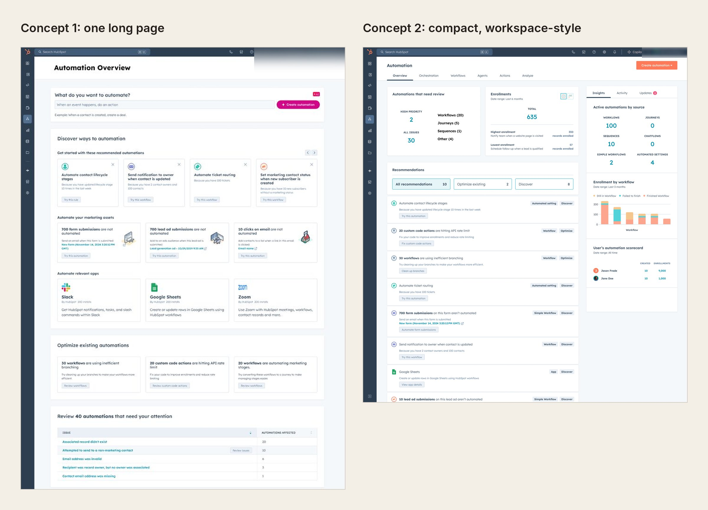
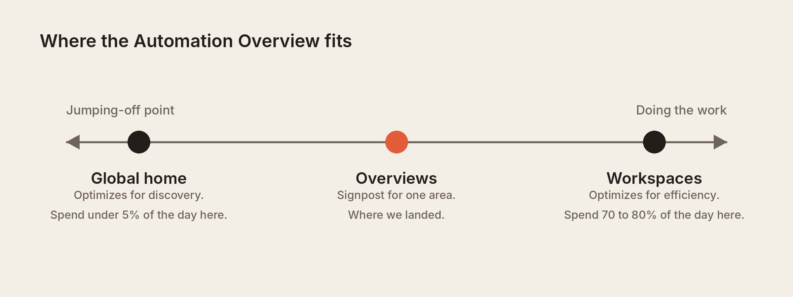
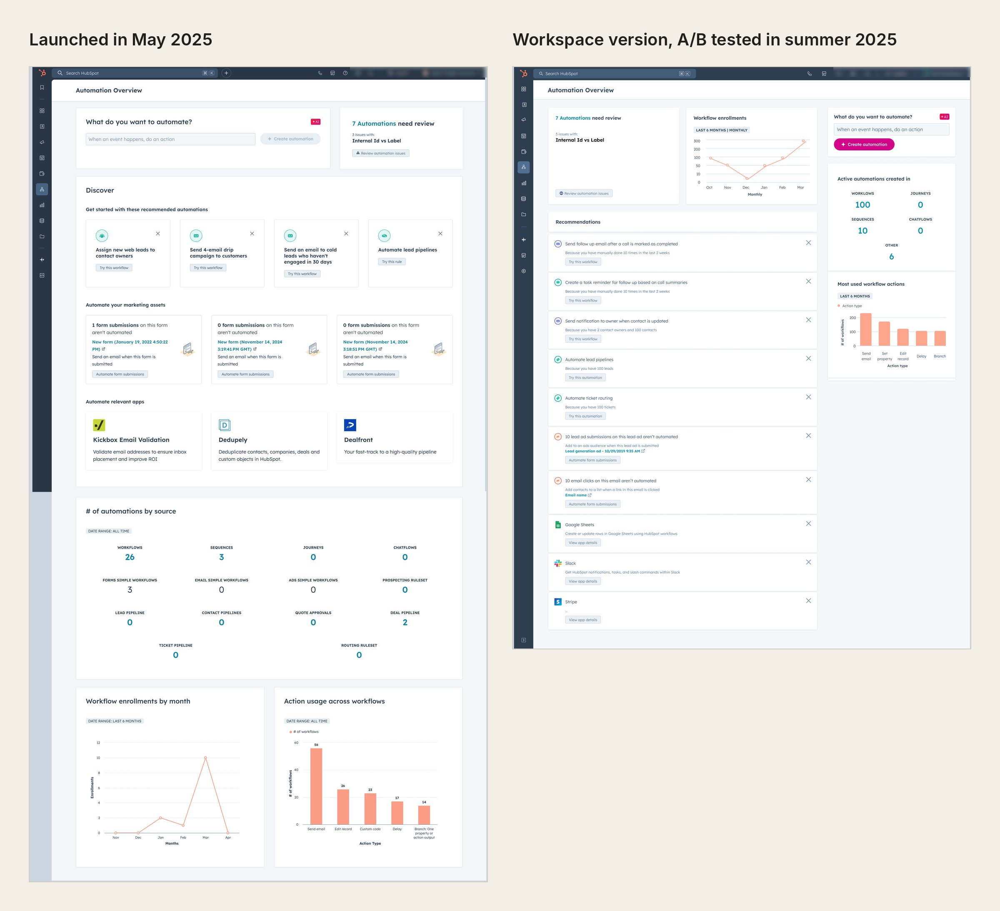
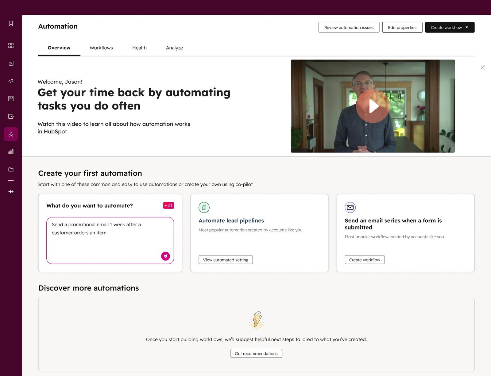
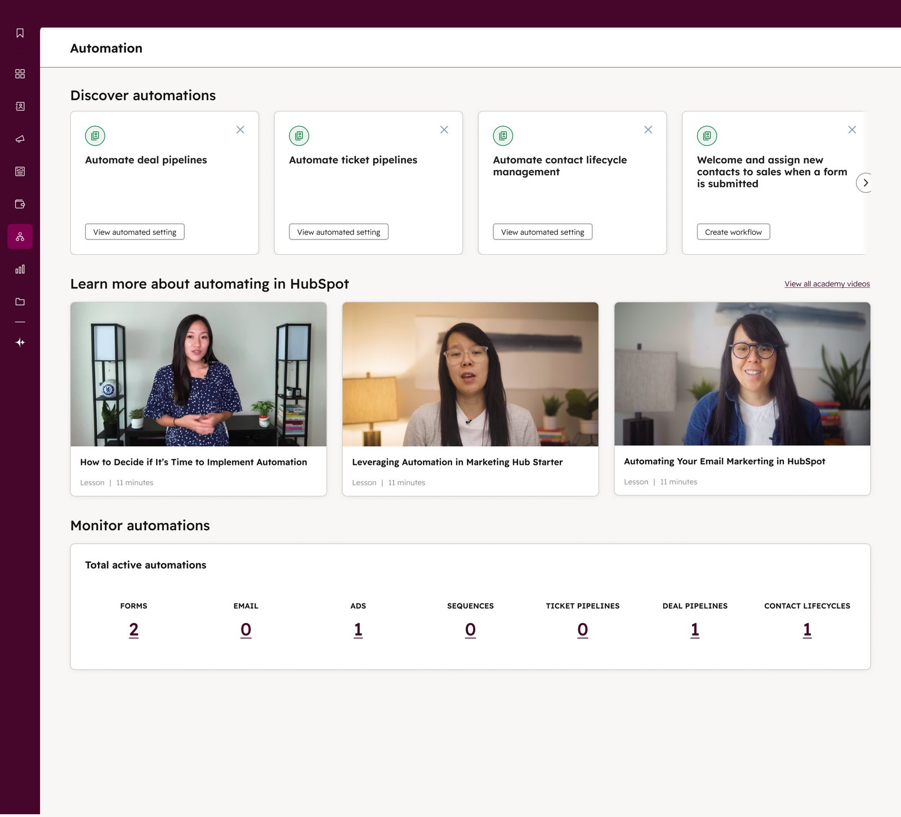

My role
I led design for the Automation Overview and co-led defining the vision with my PM. I worked with front-end and back-end engineers to build and ship it.
I owned the experience end to end, from early concepts and prototypes to final designs, across the Pro and Enterprise page, its redesign, the first-run experience for new accounts, and the Starter version. I also planned and ran the research that shaped each version, and tracked how the page performed after launch so we could decide what to change next.
I started on the project in August 2024. The Overview went to a private beta in March 2025 and launched to all Pro and Enterprise customers in May 2025. My work ended with the Starter version, which reached every Starter account in January 2026.
01 · Context
Customers had more automation tools than they knew how to use
HubSpot's automation had grown from workflows into a whole set of tools, from sequences and chatbots to simple workflows inside forms and rules tucked into pipeline settings. HubSpot measured success by how many different jobs a customer automates, like updating a deal stage or emailing a new lead.
Only 31% of customers using automation had automated ten or more jobs. More than half had automated six or fewer, and it took about five months to reach ten.
We built the first version for Pro and Enterprise, HubSpot's higher paid plans. These customers are marketing, sales and operations teams with access to the most automation tools, and marketers used automation the most. Later we brought it to Starter, the entry-level plan.
02 · Problem
Customers didn't know which tool to use or where to start
Each new tool was meant to save customers time, but together they made automation harder to use. Customers had so many options that they didn't know which tool fit which job, like choosing between a sequence and a workflow. Many ended up automating very little, or nothing at all.
Customers told us as much. One said, "People were put off actually doing anything, because it was just too scary to go in there and sort it out yourself." Another said they "spend a lot of time going from tool to tool, or don't know you even offer solutions to my problems." Others couldn't tell whether their automation was working.
That held customers back. They weren't saving the time HubSpot could save them, so they got less return on what they paid. And our data showed that the more jobs a company automated, the more of its revenue HubSpot kept over time.
"People were put off actually doing anything, because it was just too scary to go in there and sort it out yourself."
Customer, automation research
03 · Strategy
We set out to build one home for automation where everything leads to an action
My PM and I wrote the brief in August 2024 and ran a brainstorm with our engineers. Our goal was one home for automation, where customers could find tools and use cases they didn't know about and get started with little effort.


We set one firm rule. HubSpot had tried a similar home page before, and it failed because it became another reporting dashboard. So every part of the Overview had to lead to an action. A recommendation opens a ready-made automation, and the AI prompt drafts a workflow for the customer to review. To decide what to recommend, we mapped which jobs customers automate at each stage. Recommendations could then suggest the next jobs for each stage, without overwhelming people who were just starting.

We started with a private beta in March 2025 for about 20 Pro accounts that had automated four or fewer jobs.
04 · Concept validation
Customers wanted to fix what they had before building something new
I ran two rounds of concept tests. In the first, I walked four customers through an early concept and asked what they'd expect from a page called Overview compared to one called Workspace. They expected an overview to coach them and a workspace to be where they'd build. People also had to scroll too far, and one said, "Everything under here is going to be ignored." What they valued most was seeing issues and ways to improve the automations they already had.
So I designed a second concept that put issues, a performance scorecard and recommendations at the top of a compact, workspace-style page. I tested it against the first concept with 10 customers at every experience level, and they preferred the compact version. They called it "intuitive" and "a place to come back to," and one said, "This is much more useful to me than what I currently see." The first concept felt "cluttered" and "heavy."
"This is much more useful to me than what I currently see."
Customer, concept test 2

05 · Design direction
Customers preferred a workspace, but the A/B test and the UX framework pointed to an overview
Private beta customers were getting value from our initial design concepts, but they were still expressing confusion on how to navigate the page and advanced customers felt there was little value for them. We decided to launch it to all Pro and Enterprise customers on May 12, 2025 while we waited on development for the new workspace concept.
At the same time, HubSpot's UX group was defining a framework for what each kind of page should be. A global home is a jumping-off point, and a workspace is where people spend most of their day doing work. An overview sits in between, as a signpost for one area of the product. Our workspace version stretched past that definition.

The framework hadn't been tested with customers, so we wanted our own data before following it. From June 30 to July 14, 2025, we ran an A/B test of the workspace version against the launched page. The results were nearly identical across activation, interaction and retention. So the team kept the overview model.

The test still taught us something. In the launched page, the AI prompt came first and got the most use. In the workspace version, issues came first and usage shifted to issues. Whatever we put at the top got used, so I took that lesson, along with what customers had said about clutter, into a redesign of the overview itself.
06 · Final design
Each part of the page answers something we heard from customers
After launch, we turned to new accounts. With no automations, the page was mostly empty charts. I designed three versions of a zero state and ran unmoderated click tests with about seven people per version. In every version, the AI prompt was the most common place to start.


We then A/B tested two versions with new accounts. About 14% of visitors interacted with each, so neither pulled ahead, and we shipped one in summer 2025.

In September 2025 we made the Overview the first tab of the Automation app, since most people went straight to the Workflows list and skipped it.
The redesign followed in October 2025. It kept the overview model and brought over what worked in the workspace concept.
- Customers didn't know where to start,so the AI prompt stays at the top, where it got the most use.
- Customers wanted to fix what they had,so automation issues sit right beside it.
- People lost track of workflows they'd started,so "Pick up where you left off" shows ones that were edited but never turned on.
- Recommendations felt random,so each card says why it's there, like "700 form submissions on this form aren't automated."
- The reporting read like a dashboard to look at and leave,so it's condensed into one row, and each count links to the automations behind it.

In November 2025, HubSpot began a company-wide initiative to improve quality across the product. Our focus was improving Starter by bringing the Overview to Starter customers. Automation came up in about a third of Starter churn calls, often about features Starter already had.
I reframed the page around the automation Starter customers already have, like simple workflows in forms and emails and pipeline automation, instead of the Workflows tool they don't. Charts became a simple count of the customer's automations by type, because Starter customers can't drill into reporting. We launched it in January 2026 without testing first, and learned from live usage.

07 · Impact
More customers found the Overview, and it helped them get automation running
Customers had been automating very little because they didn't know where to start. After launch, monthly visits to the Overview grew from about 52,000 to 150,000 a year later.
- The page passed 2 million views by October 2026.
- 31.7% of visitors came back within 7 days.
- 26% of the 22,021 people who described an automation in the AI prompt turned on the workflow it drafted.
On Starter, about 1 in 3 visitors interact with the page, more than on Pro.
Our main goal was to help customers automate more jobs. Several launches landed close together, so we couldn't isolate the Overview's effect on that number, but we did see clear signs in the steps leading up to it. New accounts that used the Overview turned on automations twice as often in their first month as older accounts, and the AI prompt gave customers a reliable way to get a workflow running. We believe this helped customers automate more jobs than before, or get there faster.
Reflection
What I'd do differently
A page like the Overview gets every kind of visitor, and the risk was always that it would try to serve all of them and end up as a catch-all with no clear starting point. New accounts were looking for something to turn on, while established accounts cared more about how their existing automations were running.
We did a lot of concept testing early on, but I'd have kept gathering feedback after launch to see how people used the page over time.
Recommendations were the hardest part. Our goal was to get customers automating more jobs, but the system behind them couldn't vary or personalize recommendations enough to get there. This was before we could use LLMs in our infrastructure to generate personalized recommendations.